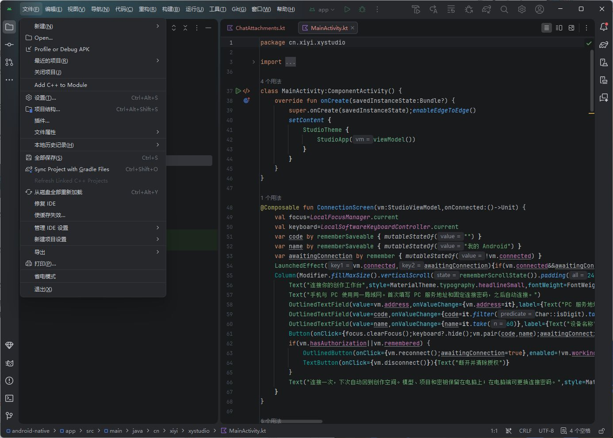

1. 打开正确的工程
先双击本手册旁的 打开AndroidStudio.cmd。它会调用项目已有启动脚本，使用已经配置好的 SDK、JDK 和缓存。
如果从 Android Studio 欢迎页进入：点击 打开 / Open，选择下面这个文件夹，不要选择整个仓库，也不要选择某个 .kt 文件：
D:\Flie\Repository\AI-Story-Studio\android-native
- 如果出现“信任项目 / Trust Project”，只信任这个工程即可。
- 等待底部同步和索引结束。首次加载可能比后续慢；不要因为界面暂时标红就立即修改配置。
- 顶部运行配置应是
app。它就是要安装到手机的应用。
以后尽量使用专用启动入口。直接双击 studio64.exe 可能使用另一套默认配置，导致中文或 SDK 设置看起来“丢了”。
2. 只认识这五个区域

| 位置 | 用来做什么 |
|---|---|
| 左侧「项目」区域 | 浏览文件。左上可切换 Android / 项目（Project）视图；找不到手册里的目录时切成 Project。 |
| 中间代码区 | 打开和编辑文件。上方每个标签是一份文件，关闭标签不会删除文件。 |
| 顶部设备 + app + 绿色三角 | 选择手机与运行配置，然后编译、安装、启动应用。 |
| 底部「构建 / Build」 | 检查编译成功或失败。运行时展开这里可看到详细日志。 |
| Logcat | 查看手机中应用的日志；只有连接手机并选择正确进程后才有意义。 |
常用入口可按 Ctrl + Shift + A 搜索操作名称；全局搜索按两次 Shift。菜单译名不同也可以输入英文名称查找。
3. 找文件，不必翻整个目录
- 按 Ctrl + Shift + N。
- 输入
MainActivity.kt，选中结果并回车。 - 按住 Ctrl 点击方法名可以跳到定义；按 Alt + ← 回到刚才的位置。
- 当前文件里找文字用 Ctrl + F；整个工程里搜索用 Ctrl + Shift + F。
| 先看三个文件 | 你能读懂什么 |
|---|---|
| MainActivity.kt | 应用入口。先只读 onCreate：加载主题，再打开 StudioApp。 |
| StudioShell.kt | 首页、创作、素材、任务四个标签和 AI 入口是怎么组织的。 |
| StudioViewModel.kt | 点击按钮后如何调用 PC、接收结果、更新界面。 |
下一步看 LanApi.kt（网络）、GenerationScreen.kt（图片/视频表单）。配合 Java 对照文档阅读，不需要硬背 Kotlin 语法。
源码目录：app/src/main/java/cn/xiyi/xystudio。虽然目录叫 java，里面放 .kt 是正常的；test 是本机单测，androidTest 是手机测试，build 是自动生成目录，不在那里修改业务代码。
4. 编译出 APK
最省事：双击本手册旁的 编译APK.cmd。它会运行现有构建脚本和单元测试；窗口显示 BUILD SUCCESSFUL 才算成功。旧 APK 会保留为带时间戳的 .bak。
如果要在 Android Studio 内操作：
- 确认工程同步完成。若提示 Gradle 文件变化，点击 立即同步 / Sync Now；也可以搜索操作
Sync Project with Gradle Files。 - 菜单 构建 / Build → Generate App Bundles or APKs → Generate APKs；不同版本可能显示 Build APK(s)。找不到时直接使用上面的专用脚本。
- 看底部 Build 结果。生成 Debug APK 不需要 Release 签名、不需要登录 Google，也不需要点击 Publish。
| 方式 | 输出位置 |
|---|---|
| 专用构建入口 | 仓库下 releases/android-native-preview/XY-Studio-Android-debug.apk |
| IDE / Gradle 原始输出 | Android 工程下 app/build/outputs/apk/debug/app-debug.apk |
两者不要混淆：IDE 直接构建不会自动更新 releases 里的副本。要拿统一命名交付包，使用“编译APK.cmd”。
5. 通过 USB 安装到 iQOO / vivo
- 数据线连接手机，保持解锁。手机弹出 USB 调试授权时点“允许”。
- IDE 顶部设备列表应出现 vivo V2171A 或类似名称，而不是
No Devices。 - 顶部配置选
app，点绿色三角 运行 / Run。IDE 会编译、安装并启动。 - iQOO 可能额外显示“继续安装”。需要在手机上确认，电脑不能代替系统授权。
也可以先使用“编译APK.cmd”，再双击 安装到手机.cmd。它只覆盖安装本项目并启动，不卸载应用、不清除数据。没有且只有一台已授权设备时会停止并说明原因。
手动检查（在仓库根目录的 PowerShell 中）：
& .\local-data\android-tools\sdk\platform-tools\adb.exe devices -l
| 显示 | 处理 |
|---|---|
| device | 已授权，可安装。 |
| unauthorized | 解锁手机，确认 USB 调试弹窗，再检查一次。 |
| offline / 列表为空 | 检查连接、数据线和手机 USB 调试状态；先不要反复安装或重装开发环境。 |
| User rejected permissions | 手机拒绝或未确认系统安装页面。解锁并确认后再运行安装入口，不必卸载原应用。 |
本次文档制作时 ADB 列表为空。此前 preview.4 的真机记录见仓库 docs/ANDROID-DESKTOP-PARITY.md；不把历史记录当作今天重新连接通过。
6. 跑通图片 → 视频 → 播放
连接与项目
- PC 打开新版 XY Studio，点击桌面版 手机连接 → 启动局域网服务并自动同步。可以先启动服务，再打开项目。
- 手机与 PC 使用同一局域网。在手机输入 PC 面板显示的服务地址，首次输入固定 12 位连接密码，点击 连接并记住设备。以后自动连接，不使用一次性码。
- 手机顶部出现 PC 已连接。项目列表显示 Studio 已登记的全部可访问项目。PC 打开、新建或切换项目后手机自动跟随；手机选项目也会切换 PC 当前项目。未登记的旧项目在 PC 打开一次即可，之后无需手动共享。素材按需读取，仍保存在 PC 原目录。
PC 地址和端口以面板为准，通常是 http://192.168.x.x:8765；不要填写 ComfyUI 的 8188，也不要把手机的 127.0.0.1 当作 PC。
生成图片
- 首页或创作页点击 生成图片。
- 选工作流，写提示词。文生图不需要参考图；图片编辑需要从当前项目选择参考图。
- 选横屏/竖屏/方形和像素量；步数 0 表示用 PC 默认值。
- 点 下一步 · 确认生成，检查 PC 返回的实际尺寸、步数、种子和参考数量。
- 点 确认并加入 PC 队列 后才真正生成。在“任务”页看真实进度；完成后去“素材 → 图片”预览。
Pixstag 云端视频 API
新版在“生成视频 → 生成来源”中可选 Pixstag 云端 API，支持 H3、Seedance 2 / 2.5。首次在 PC 设置保存 Pixstag Key，手机沿用 PC 凭据。选择模式、参考图片/视频、清晰度和 4–30 整数秒，核对参数后点“确认调用 Pixstag（可能扣费）”。生成在云端进行，结果自动保存到 PC 视频库，无需启动 ComfyUI。已提交任务无取消接口，停止查询不停止计费。
用刚生成的图制作视频
- 打开图片预览，点击 用此图制作视频，图片自动成为首帧。
- 描述主体动作与镜头运动，选择时长；先短视频验证，再做较长任务。
- 确认页检查实际帧数和对齐后的秒数，最后确认提交。
- 到任务页等待成功，再到 素材 → 视频 打开结果，点播放器播放键。任务成功与视频可播放需要分别确认。
暂停后续队列不会等同于取消当前任务。遇到提交超时，操作可能已到 PC：先刷新任务历史，避免重复提交。生成结果先保存素材库；需要时再选用到角色、场景或分镜。
7. AI 对话怎么加图片和视频
- 进入“创作”，点右下角 AI 助手，打开全屏对话。
- 点 ＋ 图片 / 视频，在当前项目素材中选择；或点 从手机导入，通过系统文件选择器上传到 PC。
- 输入框上方出现附件卡片。可预览、移除单个引用或清空引用；移除引用不删除 PC 文件。
- 输入文字后点发送。添加附件本身不会发送消息，也不会自动生成。
- AI 提出项目修改时，查看审阅内容后确认/拒绝；生成建议仍进入参数确认页。
当前 Agent 使用文件引用和文字描述，DeepSeek 没有直接接收图片像素或视频音轨。视频能作为项目引用，不代表已经具有视频理解能力，也不代表当前 H3 工作流支持视频参考输入。手机不保存 DeepSeek API Key。
单个导入文件最多 100 MB。参考图顺序对首尾帧和多参考生成有意义；本机 ComfyUI 缺少模型/节点时需先在 PC 修复。
8. 第一次修改：只改一句界面文案
- 先复制一份你要改的文件到工程之外的临时备份目录，不覆盖其他人的修改。
- 用文件搜索打开
StudioShell.kt，找到一个Text("...")中的界面文字。 - 只改双引号中的中文，保留括号、引号和代码。按 Ctrl + S 保存。
- 执行“编译APK.cmd”，成功后再安装，确认手机显示新文案。
- 不满意时在刚改的文件里按 Ctrl + Z，或只恢复自己的这一处修改，再重新编译安装。
修改文案与颜色看 StudioShell / StudioTheme；生成表单看 GenerationScreen。修改网络规则、项目写入、审阅流程之前，先读 Java 文档的业务链路。不要使用“丢弃全部修改”来撤销一行代码。
9. 出问题先看哪里
| 现象 | 先做什么 |
|---|---|
| 代码红色、无法识别依赖 | 先看 Gradle Sync 是否结束，找同步日志第一条具体错误；不要直接升级所有版本。 |
| BUILD FAILED | 展开 Build，保留第一条报错的文件名、行号和 Caused by。发给我时带这几行，而不是仅说“报错了”。 |
| 手机打开就退出 | IDE 搜索并打开 Logcat，选择手机；输入 package:cn.xiyi.xystudio.nativeapp，复现一次并查看 FATAL EXCEPTION / Caused by。 |
| 手机连不上 PC | 检查 PC LAN 面板服务是否启动、手机网络与地址；PC 防火墙应按已有说明仅允许专用局域网，勿直接关闭整个防火墙。 |
| 生成卡在排队 | 检查 PC 队列是否暂停、ComfyUI 是否就绪。等待中并不等于失败。 |
| 提交超时 / 网络断开 | 先重连并查任务历史，不要立即再次点击生成。 |
| 视频无法播放 | 确认素材是真实完成的文件、PC 仍在线；记录播放器错误码，检查原视频编码。 |
只读导出崩溃日志（不清空手机日志）：
& .\local-data\android-tools\sdk\platform-tools\adb.exe logcat -b crash -d -t 300
不要把固定连接密码、令牌或 API Key 粘贴进公开日志。手机暂时没连接时，可以先编译和阅读代码，不需要为看源码连接手机。
10. 中文设置与维护
本机已启用 Chinese (Simplified) 简体中文。路径是：设置 → 外观与行为 → 系统设置 → 语言和区域（英文 Language and Region）。语言变化需要重启。
中文资源来自 JetBrains 官方 IntelliJ IDEA 2026.2.1 安装档内的语言插件，版本 262.9437.185 与本机平台匹配；没有改插件兼容声明。设置方式参考 JetBrains 官方说明。Android 专用组件不全由这份语言包覆盖，所以部分英文是正常现象。
| 组件 | 本机安排 |
|---|---|
| IDE / 插件 / 配置 | D:\tool\AndroidStudio\android-studioD:\tool\AndroidStudio\pluginsD:\tool\AndroidStudio\config |
| SDK | 仓库下 local-data/android-tools/sdk |
| Gradle JDK | 仓库下 local-data/android-tools/jdk/jdk-21.0.12.1+1；不要改为 IDE 自带的 JBR 25。 |
| Gradle | 工程 Wrapper 8.14.3；不需要单独安装全局 Gradle。 |
出现 AGP Upgrade Assistant 或 Gradle Daemon toolchain 迁移建议，本项目目前不需要点击升级/迁移。若中文包以后不兼容新 IDE，先切回 English，再匹配新版本；不要修改插件版本号强行加载。
回退中文：在语言设置选择 English，重启即可。插件独立放在 plugins/localization-zh，未覆盖 IDE 程序或旧环境。